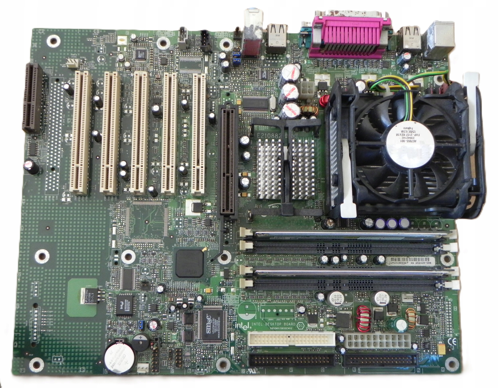

Intel Pentium 4 işlemciler için tasarlanmış, RDRAM desteği ve klasik AGP grafik yuvası ile donatılmış anakart.
| Özellik | Değer |
|---|---|
| Soket | Socket 478 |
| Chipset | Intel 850 |
| RAM | 4x RIMM Slot (2GB’a kadar RDRAM) |
| PCIe/AGP | AGP 4x + PCI Slotlar |
| Depolama | ATA/100 IDE |
| Ek Özellikler | AC’97 Ses, USB 1.1 |